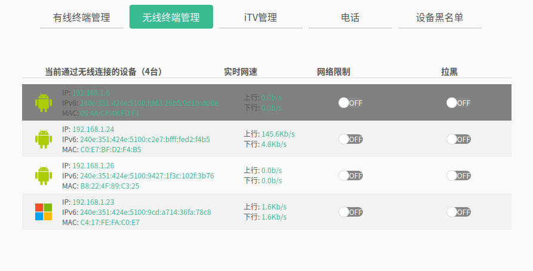

利用Busybox-httpd在电视盒子上搭建一个静态网站
- 2022/02/17 11:31:46
前言
相信大家一定有搭建网站的“梦想”，这是一个探索，就是利用httpd来搭建一个不简单的静态网页，而httpd可以集成在Busybox当中，最大的困难，也就是交叉编译Busybox了。网络上使用GitHub Pages的网页大多是用Hexo做成的，它可以把MarkDown文档渲染成静态网页，我们的目标就是使用Httpd来运行Hexo渲染的网页，这也非常简单！
思路
盒子是安卓系统，而安卓基于Linux，先查看盒子的架构，在安装相应的交叉编译工具，由于默认编译的busybox会在/usr/lib或/lib下查找共享库文件，而安卓系统并不具备所有的条件，所以我们将以静态方式编译。使用adb工具把编译好的二进制可执行文件和静态网页上传到安卓上，使用“busybox httpd”启动即可。
开始
编译Busybox
查看架构
我们需要使用adb连接到电视盒子，首先安装adb.
我选择用网络连接盒子，需要查看盒子的ip地址，可以登录路由器后台查看：

我的是192.168.1.26 用adb命令连接它：
运行后是这样的：
然后查看：
这段是指，使用电视盒子下安卓系统上的默认终端执行"uname -a" 我的运行后是这样的，不同的机器可能不同：
可以看到，这个盒子是armv7l的，可以说是arm32.那么交叉编译器就是arm开头，
安装交叉编译工具
但是，软件源中的gcc交叉编译工具一般是这种格式：gcc-arm-linux-gnueabi.安装这个是可以的，一般安装后可以自动转成：arm-linux-gnueabi-gcc.也可以直接下载交叉编译器的压缩包，解压并设置环境变量就好了（环境变量博客里专门有教程）. 输入这个，如果输出版本信息就ok：
下载Busybox源码
对于wget
对于curl
解压Busybox源码
切换工作目录
Busybox编译前配置
安装make
既然要用makefile，必须要有make啊...
正式配置
这里的"CROSS_COMPILE="指定交叉编译器，"arm-linux-gnueabi-"是我们要用到的交叉编译器前缀，简单来说就是arm-linux-gnueabi-gcc除掉gcc以外的部分，一般这是个变量，编译时需要交叉编译工具时，会在gcc或ld前自动加上arm-linux-gnueabi-，如果不指定，就是利用系统默认的gcc编译，编译获得的二进制文件的架构就是编译主机的架构.
会启动一个“图形化菜单”，利用方向键以移动，enter键确定，空格键选中.

Enter:Settings

空格:[ ] Build static binary (no shared libs)
然后ESC+ESC退出整个菜单，选择保存

正式编译
成功编译
如果在目录下看到一个叫做busybox的可执行文件，就半成功了.
我们用file命令查看busybox的架构：
32位arm Soc，完全成功！
上传busybox
指的是：使用adb把当前目录下的busybox上传到安卓设备（电视盒子）的/sdcard目录下
上传网页
也可以自己写一个Html，我选择Hexo，简单且高效，关于Hexo的配置，我推荐官方文章：https://hexo.io/zh-cn/docs
比如说我们已经有一个网站文件夹public，将它上传至/sdcard
没想到吧，也可以上传整个文件夹. 接下来就进入盒子的远程shell来配置吧.
开始搭建
进入盒子shell
切换到上传文件所在目录
busybox有可能不可以执行，给它可执行权限.
可以看到输出了一大堆命令. 使用以下命令开启httpd:
httpd命令用法：httpd -h 网站根目录 -p 网站端口号，一般80，8080就是保险一点. 用浏览器访问"盒子ip:8080"，就可以看到网页了.
Q&A
执行busybox时,"/system/bin/sh: ./busybox: not executable: magic 7F45"
编译错架构了，重新编译
/system/bin/sh: ./busybox: No such file or directory
没有上传或者编译配置时没有勾选静态编译
有没有偷懒的方法（不编译）
直接去busybox.net/downloads/binaries/找到相应架构的二进制文件下载上传
视频演示
最后
我会在在此发出使用于Qemu的busybox编译文件img.gz
资源
Busybox即FileSystem仓库 ==> https://gitee.com/canyan233/qemu-ctrl-ready-repo